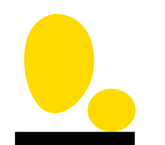
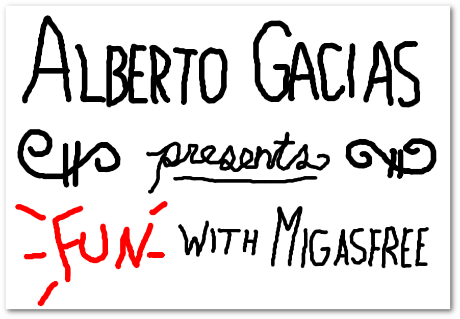
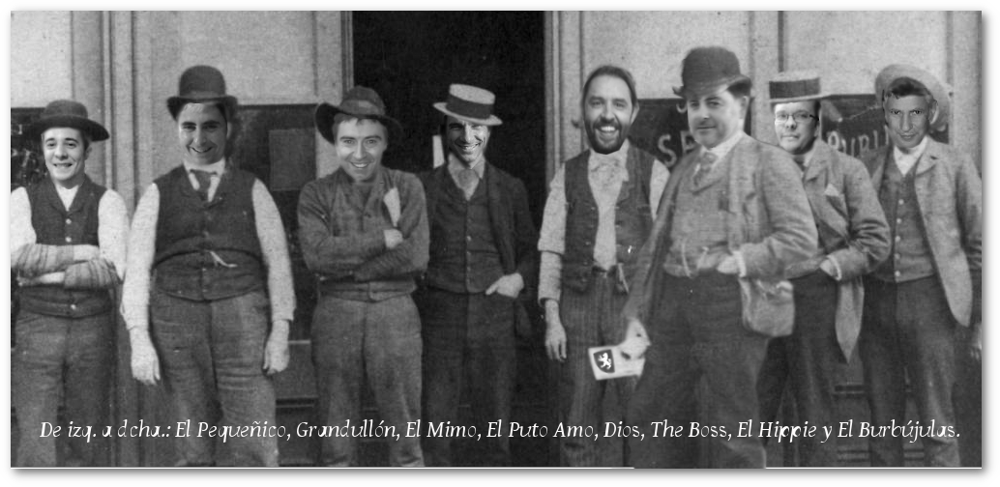

Fun with migasfree

Sobre este libro
Licencia y Copyright
Fun with migasfree
Copyright (C) 2013 - 2020 Alberto Gacías and contributors. Permission is granted to copy, distribute and/or modify this document under the terms of the GNU Free Documentation License, Version 1.3 or any later version published by the Free Software Foundation; with no Invariant Sections, no Front-Cover Texts, and no Back-Cover Texts. A copy of the license is included in the section entitled "GNU Free Documentation License".
Presentación

Hola. Soy Alberto Gacías. Bienvenidos al primer capítulo de "Alberto Gacías presenta diversión con migasfree". Durante las próximas páginas, usted y yo vamos a explorar el dinámico mundo de la migasfreelogía1.
¿Qué es migasfree en cuatro palabras?
Un gestor de despliegues.
Me atrevo incluso con sólo una palabra: Desplegador.
Migasfree se ocupa principalmente del proceso de la liberación de software y de la posterior auditoría de los cambios producidos en los equipos como consecuencia de esa liberación.
Es una de las herramientas que estamos utilizando con éxito en AZLinux, el proyecto de migración a escritorio libre del Ayuntamiento de Zaragoza.
Este software se ha hecho indispensable en nuestro día a día, y creo que es una buena solución para personalizar y administrar escritorios de forma eficaz.
¿Para qué sirve migasfree?
- Para administrar ordenadores de forma centralizada.
- Desplegar actualizaciones según calendarios y características de ordenadores y usuarios.
- Controlar y personalizar cada ordenador, manteniendo íntegros tus sistemas.
- Auditar hardware y software.
Este libro te introducirá en el uso de migasfree y lo escribo a medida que mejoramos el software, con lo que, si te lo descargaste hace tiempo, quizás ya esté obsoleto. Tenlo en cuenta.
A quién va dirigido
Este libro puede serte útil si eres administrador de escritorios (y/o servidores) y quieres personalizar y administrar de forma eficaz tus equipos, manteniendo la integridad de los sistemas.
Estructura
Parte 1. Introducción
En esta primera parte, repasaremos la Gestión de la Configuración del Software. Conocer los aspectos básicos de este proceso de la Ingeniería del Software te dará una visión de conjunto que considero esencial porque es, precisamente aquí, donde se integra migasfree.
Te explicaré las dificultades que un administrador de escritorios va a encontrarse y cómo se pueden sortear de forma sencilla, basándome en la experiencia adquirida en AZLinux.
Podrás conocer la historia, características y componentes que utiliza migasfree.
Parte 2. Primeros Pasos
Aquí te enseñaré a instalar y probar un servidor y cliente migasfree, con la configuración mínima, para que puedas verlos en funcionamiento cuanto antes.
Parte 3. Guía de uso
Te permitirá conocer tanto el cliente como el servidor migasfree más en detalle.
Parte 4. Puesta en producción
Se tratarán los aspectos a tener en cuenta si quieres utilizar migasfree en un entorno de producción, así como las FAQs y la resolución de problemas.
Ajustes
Detalla los ajustes necesarios para configurar correctamente tanto el servidor migasfree como los clientes.
Empaquetado
Contiene intrucciones para empaquetar migasfree en cualquier distribución.
Anexos
Contiene la API de migasfree, la bibliografía, referencias y licencia de este libro.
Agradecimientos
Detrás de cada proyecto hay personas que lo hacen posible, manteniendo, animando, corrigiendo, colaborando, apoyando...
Deseo expresar en primer lugar mi gratitud a Eduardo Romero. Me dio el estímulo necesario para liberar la primera versión de migasfree, haciendo visible este proyecto en Internet. También aportó la primera y única donación que ha recibido migasfree (aunque fuera por una apuesta perdida, no se lo tuve en cuenta y fue muy bien recibida).
A Jose Antonio Chavarría, compañero de fatigas (y alegrías), también me siento agradecido. Ha sido y es piedra angular en migasfree. Ha mejorado sustancialmente el proyecto reescribiendo el código spaguetti a buen código2, aportando ideas y soluciones. Me tranquiliza cuando quiero correr en exceso, y es el guardián de la simplicidad de migasfree.
A Jesús González por su empeño en crear equipos de trabajo donde las personas nos sentimos a gusto trabajando.
Y a todo el grupo de Asistencia a Usuarios del Ayuntamiento de Zaragoza, especialmente al equipo de Software Libre. Disfruto trabajando con ellos y me hacen reír a diario.

Grupo de Software Libre del Ayuntamiento de Zaragoza (año 2013)
Acerca de mí
De joven me atraía la programación. Estudié electrónica, y allí me enseñaron a programar en código máquina el microcontrolador 8751.
Aún me gusta cacharrear con transistores, condensadores, circuitos integrados, leds... y enseñar lo poco que recuerdo de todo aquello a Jesús. A los dos nos gusta jugar con arduino scratch y s4a.
Trabajé como electrónico mis primeros años laborales y, poco después, con el boom de la informática personal, empecé a desarrollar aplicaciones de todo tipo.
Actualmente trabajo como técnico informático en el equipo de Software Libre del Ayuntamiento de Zaragoza desarrollando y manteniendo AZLinux, el escritorio libre que usamos los trabajadores municipales.
Parte de mi tiempo libre lo dedico a desarrollar migasfree.
Me encanta mirar el cielo en las noches de verano de Peñiscola, la cerveza, las migas y los huevos rotos.
También me gusta escuchar música, el olor a tierra mojada y que me hagan reír con cualquier tontada.
Amo a Patricia, y a Jesús, nuestro hijo.
Nota del autor
Algunos han criticado a las personas que entregamos parte de nuestro tiempo en producir software libre. El argumento se basa en que nuestra aportación hace que se eliminen puestos de trabajo o que algunas empresas no pueden hacer negocio por competencia desleal. Dicen estar hartos de gente que "trabajamos gratis" y que les "quitamos" el sustento.
No puedo estar de acuerdo. En primer lugar porque el software libre no es un asunto económico sino que, sencillamente, lo que plantea es una cuestión de libertad.
Pienso que los modelos de negocio obsoletos deben adaptarse y evolucionar hacia nuevas formas de generar riqueza, creando nuevas relaciones entre productor y consumidor. Los modelos de negocios basados en software libre a menudo nos indican el camino a seguir, ya que están estableciendo estas nuevas relaciones y obteniendo la confianza y el reconocimiento del consumidor, y no precisamente por cuestiones económicas. ¿No desean esto las empresas para sí?
En cuanto a que producir algo que otros obtienen gratis no genera puestos de trabajo, pienso que es falso. Sólo hace falta fijarse en como las tecnologías de interconexión, protocolos y servicios de accesibilidad de la red Internet ha generado, y seguirá generando, infinidad de puestos de trabajo. Estoy convencido que Internet no sería ni siquiera una sombra de lo que es si estas tecnologías se hubieran patentado, cerrado y/o explotado económicamente.
Creo que el movimiento del software libre es, junto con otros, una esperanza para que el Conocimiento vuelva a ser producido por la sociedad y para la sociedad, en contraposición al Conocimiento creado, comercializado y controlado por determinadas organizaciones y que, en ocasiones, causa un perjuicio a la sociedad.